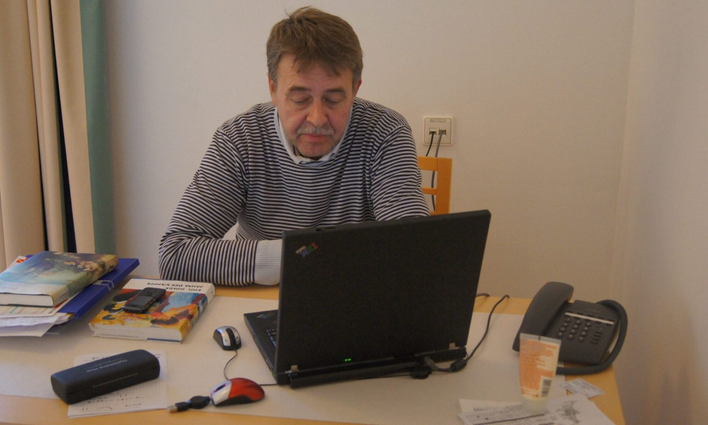

Om forfatteren
Mit navn er Allan Jensen, og jeg er født i 1952. Jeg er uddannet cand.mag. med hovedfag i tysk og bifag i dansk. Igennem mange år har jeg undervist i gymnasiet og gør det stadig – nu for nedsat kraft og kun i tysk.
At have umiddelbar adgang til både dansk og tysk kultur, til dansk og tysk litteratur, og ikke mindst til de store tyske Dichter und Denker, har jeg altid oplevet som et stort privilegium. Samtidig har jeg også altid været dybt optaget af sprog og sproglige virkemidler, og hvordan man bedst udnytter sprogets uendelige kombinationsmuligheder til at formidle et stof på en letforståelig måde uden at gå på kompromis med substansen.
Da jeg så for nogle år siden for alvor kom ind i Emil Noldes verden, blev jeg hurtigt klar over, at her var der en på alle måder vigtig historie at fortælle, en historie, der havde alle eventyrgenrens dramatiske og brogede elementer, og en historie, som hidtil kun var blevet fortalt brudstykkevis og i høj grad forvansket.
Jeg har været vidt omkring for at finde så mange tilgængelige kilder, som det var mig muligt. Således er min biografi den første sammenhængende beretning om hele Noldes liv på dansk. De fleste af mine kilder har været på tysk, enkelte på engelsk; alle kilder, der i biografien er citeret på dansk, er nyoversat af mig. Hvis der i forvejen har været danske oversættelser, har jeg ikke brugt dem.
Allan Jensen